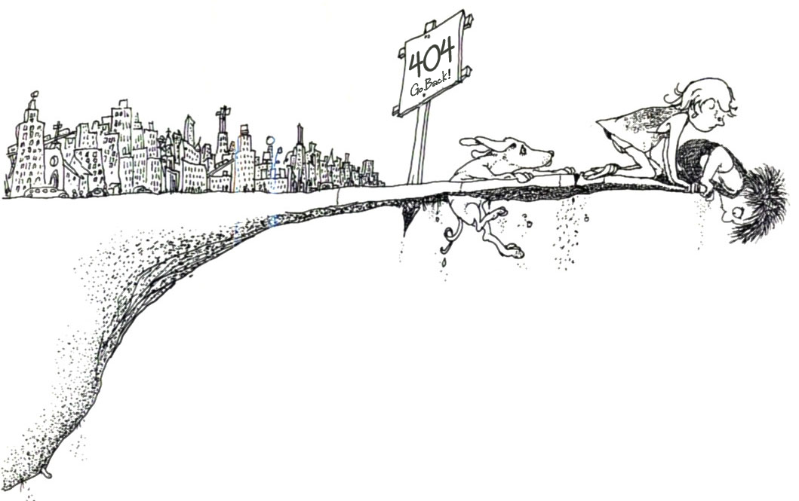

There is a place where the Internet ends
And before the street begins,
And there the grass grows soft and white,
And there the sun burns crimson bright,
And there the market researcher rests from his flight
To cool in the peppermint wind.
Congratulations.
This is where the Internet ends.
Click here to go back.